![Four panels over x from −1 to 5 and y from −1 to 6.5, each with the same rising straight line through y equal to 2 at x equal to 0. Panel (a) shows six open points scattered around the line. Panel (b) adds dashed axes through zero, an upward arrow of length 2 from the origin to the line, labelled beta 0, and two upward arrows of length 0.5 at x equal to 1 and 2, labelled beta 1. Panel (c) joins each point to the line with a vertical segment labelled epsilon i. Panel (d) stands six identical grey bell curves sideways on the line at x from −1 to 4, each reaching about 2.5 units above and below it, with the six points among them.](chapter_07_files/figure-html/fig-ch7-model-parts-1.png)
Simple Linear Regression
NoteChapter overview
This chapter reads regression as prediction with quantified uncertainty. It opens with the simple regression model, a straight line for the mean of an outcome with three parameters, and reads those parameters in a picture and in a simulated process whose values we know. It then turns to a reported claim about education and income and a question about 102 occupations: we plot the records, fit a straight line, read its slope, intercept, fitted values and residuals as a description of those records, and see how least squares chooses the line and how well it fits. Declaring the model for the occupations gives the slope a standard error and an interval, repeated samples of the known process show what the interval’s coverage means, and prediction comes at three levels: a point, a mean response and one new case. A residual plot and one influential occupation qualify these answers. The chapter closes with regression toward the mean in its two versions, Galton’s heights of fathers and sons and a hypothetical class’s two exams. By the end you will be able to state and read a simple regression model, fit and read one in R, say what its descriptive and model-based answers concern, and recognize regression toward the mean in a before-and-after claim. An appendix develops the mathematics.
Suppose a report says, “Another year of education increases income by about 900 dollars.” Before asking whether the number is significant, ask whose education and whose income were measured: individuals, households and occupations give three different comparisons.
Our question is narrower:
Among the 102 recorded Canadian occupations, how did occupation-average income differ across the supported range of occupation-average education in 1971, as summarized by a fitted straight line?
One row is an occupation, not a worker. An occupation with higher average education need not contain the same people as one with lower average education, so a comparison of their averages does not describe what another year of schooling would do to one person’s income. Aggregate and individual relationships can differ substantially (Robinson, 1950).
Regression estimates the relationship between an outcome (the dependent variable) and one or more predictors (independent variables), and uses that relationship to predict the outcome. It is best read as prediction with quantified uncertainty. A fitted line predicts an occupation’s average income from its average education; the residuals show how far each record lies from its prediction; and, once a model for the records is declared, standard errors and intervals say how uncertain the slope and the predictions are. We take a comparison, not a causal, perspective: the line predicts income at given education values, and its slope compares those predictions across occupations. Section 1 states the model that gives a slope its meaning; Section 2 returns to the occupations.
The Simple Regression Model
From a mean to a line
One common mean describes the centre of an outcome for all cases. Allowing separate means for groups recognizes that different categories may have different averages. Simple regression takes another step: the mean changes continuously along a straight line as a numerical predictor changes. The conditional mean is the mean outcome at a stated predictor value.
For case \(i\), write \(x_i\) for its recorded predictor value and \(Y_i\) for an outcome the model could generate. We hold the complete set of observed predictor values \(x_1,\ldots,x_n\) fixed. Repetition means new outcomes at those same values, so expectations and variances below suppress conditioning on that fixed set. The mean and individual outcome are
\[ E(Y_i)=\beta_0+\beta_1x_i,\qquad Y_i=\beta_0+\beta_1x_i+\varepsilon_i. \]
The error \(\varepsilon_i\) is how far case \(i\)’s outcome lies above or below the true mean line. The conditions
\[ E(\varepsilon_i)=0,\qquad \operatorname{Var}(\varepsilon_i)=\sigma^2 \]
say that errors average zero at every recorded predictor value and have the same variance everywhere. Two more conditions complete the model used for exact inference. The errors are independent of one another, a property of how cases were sampled, assigned or measured; a good-looking plot cannot establish it. For the exact \(t\) procedure of Section 3 they are also Normal, \(\varepsilon_i\overset{\mathrm{ind}}\sim\mathcal N(0,\sigma^2)\). Neither the distribution of the predictor values nor the pooled outcomes needs to be Normal: the condition concerns errors around the line at each predictor value. The predictor values must differ, since points that all share one \(x\) cannot determine a slope.
The model has three parameters: the intercept \(\beta_0\), the slope \(\beta_1\) and the error SD \(\sigma\). They belong to the process that produces the data, and in practice they are unknown. A hat marks a quantity computed from data: \(\widehat\beta_0\) and \(\widehat\beta_1\) estimate \(\beta_0\) and \(\beta_1\), and the residual SD \(s_e\) of Section 2.6 estimates \(\sigma\).
Interpreting the model parameters
Regression is used to predict outcomes, and the parameters behind its predictions are read as comparisons (Figure 1):
- The first two parameters, the intercept \(\beta_0\) and the slope \(\beta_1\), are the regression coefficients. They form the deterministic part of the model: the true line, which gives the mean outcome at each value of \(x\).
- The slope \(\beta_1\) is often the parameter of greatest interest. It quantifies the relationship between \(x\) and \(y\): for a one-unit difference in \(x\), the mean of \(y\) differs by \(\beta_1\) units. This is a comparison between cases that differ in \(x\), not a change within one case whose \(x\) changed.
- The intercept \(\beta_0\) provides the baseline for the comparison: it is the mean of \(y\) when \(x\) equals zero. Reading it as a data-supported mean requires a meaningful zero within the range of the observed predictor values, as in this illustration but not for the occupations of Section 2.
- The error \(\varepsilon\) is the stochastic part of the model, the variation that the line leaves open. For case \(i\), \(\varepsilon_i\) is the vertical distance from its outcome to the true line, positive above it and negative below. It captures all the variation in \(y\) that \(x\) does not explain, and the model assumes that the errors follow a Normal distribution with the same SD \(\sigma\) at every \(x\).
- Predictions and comparisons are therefore accompanied by measures of uncertainty: \(\sigma\) says how far outcomes typically lie from the line, and Section 3 turns it into standard errors for the estimated coefficients.
In panel (b) the slope is the same wherever it is measured: cases at \(x=0\) and \(x=1\) have mean outcomes 0.5 apart, and so do cases at \(x=1\) and \(x=2\). Because the true line is unknown in practice, so are the errors of panel (c); Section 2.3 measures distances from a fitted line instead, the residuals. Panel (d) shows what the error conditions claim: under Normal errors about two-thirds of the outcomes lie within \(\sigma\) of the line and about 95% within \(2\sigma\). Here \(\sigma=1\), and four of the six invented points lie less than one unit from the line.
A process with known values
A simulation makes the model concrete. We choose the three parameters ourselves, generate data from the model, fit a line and compare the estimates with the values we chose. Take 20 predictor values equally spaced from 6 to 16, close to the range of the occupations’ education in Section 2, and generate
\[ Y_i=2+0.5x_i+\varepsilon_i,\qquad \varepsilon_i\overset{\mathrm{ind}}\sim\mathcal N(0,1). \]
The true intercept is 2, the true slope 0.5 and the error SD 1; these are a teaching construction, not records of any study.
set.seed(123)
known_data <- data.frame(x = seq(6, 16, length.out = 20))
known_data$y <- 2 + 0.5 * known_data$x + rnorm(20, sd = 1)
known_model <- lm(y ~ x, data = known_data)The predictor values and error SD are fixed by the generating process; the realized errors determine this sample’s fitted line. Least squares, the rule of Section 2.4, supplies its coefficients. Table 1 compares the estimates with the known parameters.
| Quantity | Estimate | Model SE |
|---|---|---|
| Intercept | 2.4770 | 0.8362 |
| Slope | 0.4695 | 0.0733 |
| Residual SD | 0.9945 |
The SE column reports uncertainty for the two coefficient estimates; the residual SD also has estimation uncertainty, which this table does not report. Section 3.1 derives the coefficient SEs, carrying the standard errors of Chapters 3 and 5 over to a line.
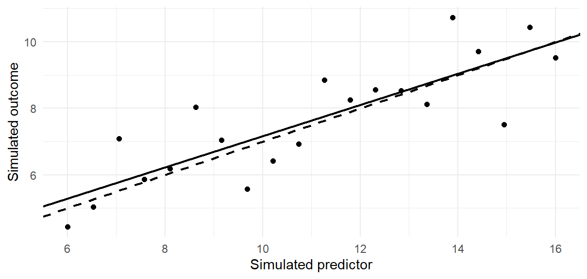
In this one sample each coefficient misses its programmed value by less than one SE: the slope is 0.4695 against 0.5, with SE 0.0733, and the intercept 2.477 against 2, with SE 0.8362. Misses of that size are usual. For this 20-point design about two-thirds of estimates fall within one SE of the truth and about 94% within two, the chances .6694 and .9392 that a \(t\) variable on 18 df lies within 1 and 2 of zero; Section 3.1 repeats the process many times to show what an SE estimates. In Figure 2 the errors are the vertical distances to the dashed true line, and the residuals of Section 2.3 the distances to the solid fitted line.
The Occupation Records and the Fitted Line
We now return to the occupations of the opening question.
The occupation records
The data are distributed as carData::Prestige (Fox et al., 2022; Fox & Weisberg, 2019). The package documentation attributes education and income to the Census of Canada (1971), volume 3, part 6, pages 19-1 to 19-21. We treat that documentation as a source record, not as evidence that the occupations form a probability sample, and the calculations are our reanalysis.
| Feature | Meaning in this chapter |
|---|---|
| Unit and record count | 102 occupations; each occupation receives equal weight |
| Education, \(x\) | Average years of education of occupational incumbents in 1971 |
| Income, \(y\) | Average income of incumbents, divided by 1,000; thousand 1971 Canadian dollars |
| Missingness for the fit | No missing education or income values; no modeled rows excluded |
| Observed support | Education: 6.38–15.97 years; income: 0.611–25.879 thousand dollars |
| Descriptive estimand | Least-squares slope summarizing these 102 fixed occupation records |
| Limits of the source record | Cross-sectional and observational; no probability-sampling basis or individual-level analysis established here |
Each occupation counts once, however many people it employs, so the analysis does not describe an average worker’s experience; and 1971 dollars are not today’s purchasing power.
Plot the records, then fit the line
prestige <- carData::Prestige
prestige$income_k <- prestige$income / 1000
library(ggplot2)Dividing income by 1,000 expresses each occupation’s recorded average in thousands of dollars; the occupations and their relative incomes stay the same.
ggplot(prestige, aes(education, income_k)) +
geom_point(shape = 1, size = 2) +
labs(x = "Average education (years)",
y = "Average income (thousand 1971 dollars)")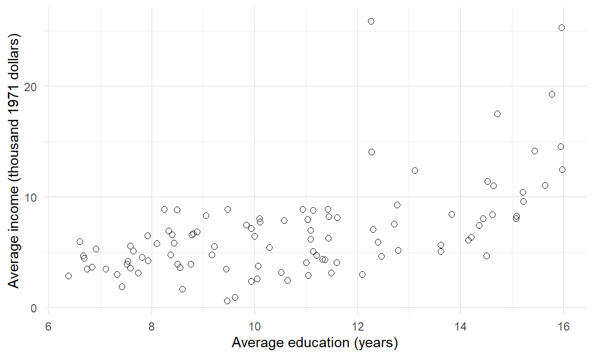
The scatterplot is panel (a) of Figure 1 without its line: the records are visible, but the process that produced them, if any, is not. Income rises with education, with much scatter. General managers average 12.26 years of education and 25.879 thousand dollars; university teachers average 15.97 years and 12.480. More education does not order every pair of occupations by income, so a line can summarize the overall pattern but cannot describe every occupation equally well. We save the straight-line fit as model and its coefficients as b.
model <- lm(income_k ~ education, data = prestige)
b <- coef(model)
coef(model)
#> (Intercept) education
#> -2.8535855824 0.8988128418lm() finds the coefficients; it does not choose a population, establish a causal design or justify a confidence interval.
Fitted values, slope and residuals
A straight line assigns each observed predictor value \(x_i\) a fitted value \(\widehat y_i\), the line’s prediction for record \(i\):
\[ \widehat y_i=\widehat\beta_0+\widehat\beta_1x_i, \qquad e_i=y_i-\widehat y_i. \]
The subscript \(i\) indexes a record and the hat marks a fitted quantity. The residual \(e_i\) is observed minus fitted income: positive for an occupation above the line, negative below it. It is computed from the fitted line, unlike the error \(\varepsilon_i\) of Section 1, measured from the unknown true line.
For the occupation records, the line is
\[ \widehat{\mathrm{income}}=-2.8536+0.8988\,\mathrm{education}. \]
With income in thousands of dollars, the slope says that fitted income differs by 0.8988 thousand dollars, about 899 dollars, per one-year difference in occupation-average education; a two-year difference corresponds to \(2\widehat\beta_1\approx1.7976\) thousand dollars.
Warning
A word of caution on the intercept. The intercept is meaningful only if \(x=0\) is a plausible value within the scope of the data; otherwise it is a mathematical anchor for the line, not an interpretable value. Here \(\widehat\beta_0=-2.8536\) is the fitted income at zero years of education, far outside the observed 6.38–15.97 years, and no recorded occupation has negative income. Centering education at 12 years (Section 2.5) moves the intercept to a supported value: 7.9322 thousand dollars, the fitted income of an occupation averaging 12 years.
For university teachers, the fitted coefficients before rounding give
\[ \widehat y=\widehat\beta_0+\widehat\beta_1(15.97) \approx11.5005,\qquad e=12.4800-\widehat y\approx0.9795, \]
so their recorded income lies about 980 dollars above their prediction. predict() applies the saved line to a record or to a new education value without refitting:
teacher <- prestige["university.teachers", ]
teacher_fit <- predict(model, newdata = teacher)
at_12 <- predict(model, newdata = data.frame(education = 12))
c(fitted = unname(teacher_fit),
residual = teacher$income_k - unname(teacher_fit),
at_12 = unname(at_12))
#> fitted residual at_12
#> 11.5004555017 0.9795444983 7.9321685196The last value, at_12, is the 7.9322 thousand dollars that the intercept warning above uses. Figure 4 draws the fitted line and marks the university-teacher residual.
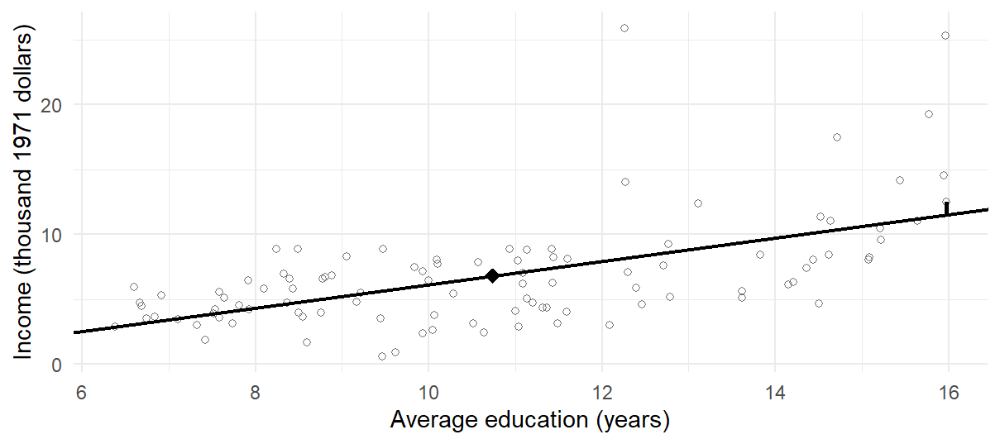
lm() returns this line whether or not Section 1’s model holds for the occupations. Here the line describes the 102 records: its slope, fitted values and residuals are completed calculations on them. A standard error and an interval answer a further question, which Section 3.1 asks once the model is declared for the occupations.
Comparison versus counterfactual interpretation
A regression coefficient can be described in two ways that are easily confused. A comparison or predictive interpretation describes differences between units: two units whose predictor values differ by one unit are predicted to differ by \(\beta_1\) in their outcomes, on average. It answers questions such as “How well does \(x\) predict \(y\)?”, “How do units that differ in \(x\) differ in \(y\)?” and “What is the relationship between \(x\) and \(y\)?” This is the default reading of a regression fitted to observational records, and the reading this chapter uses.
A counterfactual or causal interpretation asks how a unit’s outcome would differ under two alternatives, such as two amounts of schooling one year apart. Each unit experiences only one alternative on a given occasion. With a design that supports the comparison, such as random assignment, outcomes across units can identify an average effect even when individual effects differ. If the mean outcome under each alternative follows a straight line in \(x\), its slope \(\beta_1\) gives that average effect per unit difference in \(x\). Records of the same units over time can show how they changed, but attributing that change to the predictor still needs a credible comparison.
Table 3 applies the two readings to the occupation slope. The counterfactual reading appears twice, because the unit that would change can be an occupation or a worker.
| A sentence about the slope 0.8988 | What it compares | Do these records support it? |
|---|---|---|
| Occupations whose average education is one year higher have fitted average income about 899 dollars higher | Different occupations, along the fitted line | Yes, as a description of the 102 records over 6.38–15.97 years |
| If an occupation’s average education rose by one year, its average income would rise by about 899 dollars | One occupation with and without the rise | No: one occupation’s income without the rise is never observed; a credible comparison, such as a randomized one, could identify an average effect across occupations, not this occupation’s own |
| Another year of schooling raises a worker’s income by about 899 dollars | One person with and without more schooling | No: it needs records of individuals and a causal design; occupation averages cannot supply either |
Only the first sentence compares what the records compare: occupations that differ in average education. The second compares one occupation with and without a rise in education, and the third one worker with and without more schooling. A cross-sectional comparison of occupation averages supplies no credible comparison for either, and the third also asks about individuals, whom occupation averages do not describe (Robinson, 1950). The wording of a question signals which reading it asks for. Words such as difference, relationship, higher, lower and predict usually ask for a comparison between units; effect, impact, change, increase and decrease usually ask what a change would do, which needs a design that supports it. The opening report, “another year of education increases income”, uses the second kind of wording for a comparison of the first kind.
How least squares chooses the line
Ordinary least squares (OLS) chooses the intercept and slope that minimize the residual sum of squares:
\[ RSS=\sum_{i=1}^{n}(y_i-\widehat\beta_0-\widehat\beta_1x_i)^2. \]
Squaring stops positive and negative residuals from cancelling and gives large residuals more weight. “Best” means best by this criterion among straight lines, not best for every research purpose. Two centered sums give the solution:
\[ S_{xx}=\sum_i(x_i-\bar x)^2,\qquad S_{xy}=\sum_i(x_i-\bar x)(y_i-\bar y), \]
\[ \widehat\beta_1=\frac{S_{xy}}{S_{xx}} =\frac{s_{xy}}{s_x^2} =r\frac{s_y}{s_x}, \qquad \widehat\beta_0=\bar y-\widehat\beta_1\bar x. \]
Here \(\bar x,\bar y\) are means, \(s_x,s_y\) sample standard deviations, \(s_{xy}\) the sample covariance and \(r\) Pearson’s correlation. The variance and covariance both divide by \(n-1\), which cancels in their ratio. The slope carries thousand dollars per education year; the correlation has no units. For these data,
\[ \widehat\beta_1=\frac{675.8041}{751.8852}\approx0.8988, \qquad \widehat\beta_0=\bar y-\widehat\beta_1\bar x\approx-2.8536. \]
The scalar covariance is \(s_{xy}=6.6911\) thousand-dollar-years and the education variance is \(s_x^2=7.4444\) years squared. Dividing them leaves thousand dollars per education year. Alternatively, the unit-free correlation \(r=.5776\) multiplied by the income SD over the education SD restores the same slope and units. R applies both identities directly to the recorded education and income values:
x <- prestige$education
y <- prestige$income_k
cov(x, y) / var(x)
cor(x, y) * sd(y) / sd(x)Both routes give 0.8988 using unrounded quantities from the same 102 complete pairs. This common set of records matters: separately calculated summaries that omit different occupations need not reproduce the fitted line.
A slope needs education to vary: if every occupation had the same education, \(S_{xx}=0\) and no slope could be identified. The line passes through \((\bar x,\bar y)\), since substituting \(\bar x\) into the intercept formula gives \(\bar y\). With an intercept, the residuals also sum to zero and their products with \(x\) sum to zero; otherwise the line could be shifted or tilted to reduce RSS. These are algebraic properties of OLS, not tests of independence or linearity. Because they tie the residuals together, residuals are an imperfect window on the errors, which Section 5 keeps in mind. Appendix A derives them.
Three teaching records, \((x,y)=(1,2),(2,4),(3,3)\), show the whole calculation at once. Their means are \(\bar x=2\) and \(\bar y=3\). Table 4 lays out the centered values, their squares and products, the fitted values and the residuals, with column sums in the last row.
| \(x\) | \(y\) | \(x-\bar x\) | \(y-\bar y\) | \((x-\bar x)^2\) | \((x-\bar x)(y-\bar y)\) | \(\widehat y\) | \(e\) | \(e^2\) |
|---|---|---|---|---|---|---|---|---|
| 1 | 2 | \(-1\) | \(-1\) | 1 | 1 | 2.5 | \(-0.5\) | 0.25 |
| 2 | 4 | 0 | 1 | 0 | 0 | 3.0 | 1.0 | 1.00 |
| 3 | 3 | 1 | 0 | 1 | 0 | 3.5 | \(-0.5\) | 0.25 |
| Sum | 0 | 0 | 2 | 1 | 9.0 | 0.0 | 1.50 |
The sums give \(S_{xx}=2\) and \(S_{xy}=1\), so
\[ \widehat\beta_1=\frac{S_{xy}}{S_{xx}}=\frac12=0.5,\qquad \widehat\beta_0=\bar y-\widehat\beta_1\bar x=3-0.5(2)=2. \]
The fitted values 2.5, 3.0 and 3.5 lie on this line, the residuals sum to zero, and their squares sum to \(RSS=1.5\). No Normality assumption is needed; the model of Section 1 enters only when we ask about repeated-sample uncertainty.
Candidate lines and centering
Least squares also lets us compare the fitted line with alternatives. Make every candidate pass through \((\bar x,\bar y)\) and vary only its slope \(b_1\); then
\[ RSS(b_1)=RSS(\widehat\beta_1) +S_{xx}(b_1-\widehat\beta_1)^2. \]
The added term is zero only at the OLS slope. Table 5 and Figure 5 check five lines on the occupation records; they are alternative summaries of the same records, not repeated samples.
| Intercept | Slope | RSS |
|---|---|---|
| 3.5892 | 0.2988 | 1484.0707 |
| 0.3678 | 0.5988 | 1281.0617 |
| \(-2.8536\) | 0.8988 | 1213.3920 |
| \(-6.0750\) | 1.1988 | 1281.0617 |
| \(-9.2964\) | 1.4988 | 1484.0707 |
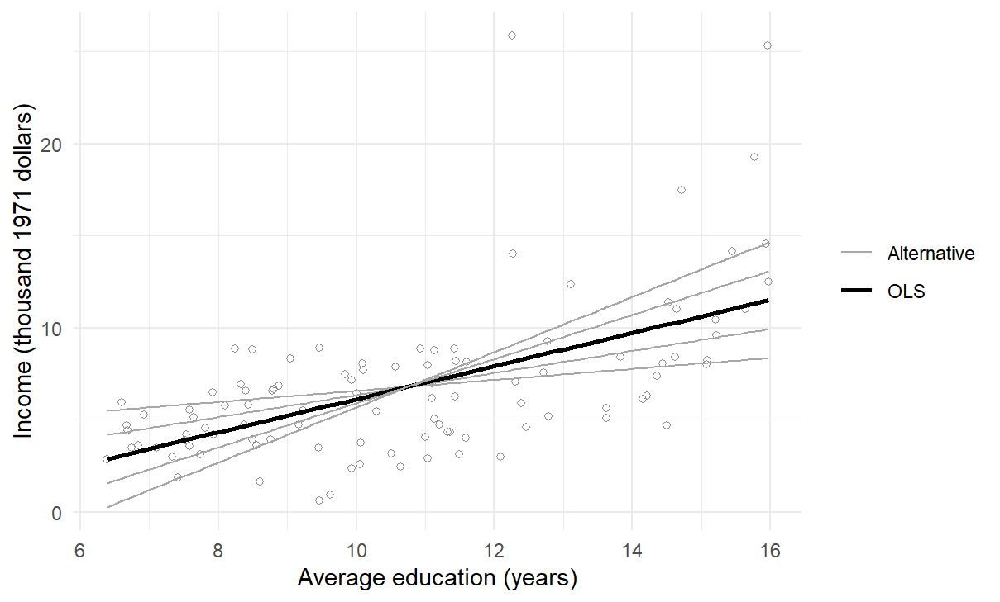
Every alternative has a larger RSS than the OLS line, and slopes equally far above and below 0.8988 add the same excess. Because large vertical discrepancies weigh heavily, high-income occupations can pull the line, a feature of the criterion rather than evidence that they are wrong. The squared residuals of the fitted model recover its minimum RSS:
sum(resid(model)^2)The fitted line can also be written around a chosen reference point:
\[ \widehat y_i=\bar y+\widehat\beta_1(x_i-\bar x). \]
Centering education at its mean makes the intercept \(\bar y=6.7979\) thousand dollars, the fitted income at average education; centering at 12 makes it 7.9322. The slope, fitted values, residuals and \(R^2\) stay the same: centering moves the reference point, not the line. Changing income from thousands of dollars to dollars multiplies the intercept, slope, residual SD and the coefficient SEs of Section 3.1 by 1,000 and leaves the \(t\) and \(p\) of Section 3.1, \(r\) and \(R^2\) unchanged; a unit change is not new evidence.
How well does the line fit?
A line can show a clear trend and still leave large differences between occupations. Two summaries assess the fit of the model as a whole: one as a proportion, the other on the outcome scale. For OLS with an intercept, the total variation of income around its mean splits into two sums of squares:
\[ TSS=\sum_i(y_i-\bar y)^2=RegSS+RSS, \qquad RegSS=\sum_i(\widehat y_i-\bar y)^2. \]
For the occupation records, \(1820.8134=607.4214+1213.3920\), in squared thousand dollars. These are sums of squared deviations, not variances; the split holds because the fitted deviations and the residuals have a zero cross-product. The coefficient of determination, \(R^2\), is the share of the total that the regression part accounts for:
\[ R^2=\frac{RegSS}{TSS}=1-\frac{RSS}{TSS} =1-\frac{1213.3920}{1820.8134}\approx.3336. \]
As a goodness-of-fit measure, \(R^2\) runs from 0, a line that predicts no better than the mean, to 1, a line through every record. The occupation line accounts for 33.36% of the squared variation of income around its mean. “Accounts for” is algebraic: it does not mean that education causes or determines income. A higher \(R^2\) indicates a closer fit, but what counts as a good \(R^2\) depends on the context; an \(R^2\) of .10, for instance, means that the line accounts for 10% of the squared variation in the outcome.
With an intercept, \(R^2\) is also a squared correlation in two ways:
\[ R^2=r_{xy}^2=r_{y\widehat y}^2, \]
here \(.5776^2\approx.3336\). The first is the squared correlation between the predictor and the outcome; the second, between the outcome and its fitted values. In simple regression the two agree, because the fitted values are a straight-line function of \(x\). The second carries over to multiple regression (Chapter 8), where several predictors share one set of fitted values.
\(R^2\) has no units. The residual standard deviation puts the remaining scatter back on the outcome scale. It averages the squared residuals over their degrees of freedom (df) rather than over \(n\). For one mean, the \(n\) deviations from the sample mean sum to zero, so only \(n-1\) of them are free to vary, and the sample variance divides by \(n-1\). A fitted line imposes two such constraints. Least squares makes the residuals sum to zero and also makes them uncorrelated with the predictor,
\[ \sum_ie_i=0,\qquad \sum_ix_ie_i=0, \]
as Appendix A derives from the equations that define the minimizing line. These are two independent linear constraints on the \(n\) residuals, so the residuals can vary freely in only \(n-2\) directions: they carry \(n-2\) free pieces of information. Each estimated coefficient uses up one degree of freedom: the intercept and the slope leave \(n-2=100\) residual degrees of freedom for the 102 occupations. Chapter 8 extends the count to \(n-p-1\) for a model with \(p\) predictors. Dividing by \(n-2\) rather than \(n\) compensates for the fit: the line was chosen to make these particular residuals small, so their plain average square would understate the scatter of the errors around the true line (Appendix A shows that the \(n-2\) divisor removes this bias). The residual SD is
\[ s_e=\sqrt{\frac{RSS}{n-2}} =\sqrt{\frac{1213.392}{100}}=3.4834. \]
Occupations typically lie about 3.48 thousand dollars, roughly 3,483 dollars, above or below the line. “Typically” here means a root mean square, the square root of an average squared residual, rather than an average distance. R prints \(s_e\) as the residual standard error, and it is also called the standard error of the estimate; despite the name, it is not the standard error of a coefficient. Under the model of Section 1.1, \(s_e^2\) is an unbiased estimate of the error variance \(\sigma^2\) and \(s_e\) estimates the error SD \(\sigma\) (Appendix A); without that model, \(s_e\) measures residual scatter. sigma() returns it, summary() reports \(R^2\), and squaring the correlation of Section 2.4’s x and y reproduces \(R^2\):
c(residual_SD = sigma(model), R_squared = summary(model)$r.squared,
squared_r = cor(x, y)^2)
#> residual_SD R_squared squared_r
#> 3.4833777071 0.3335989192 0.3335989192Table 6 sets four summaries side by side. Here and below, \(SE\) denotes an estimated standard error; the last row needs Section 1’s model declared for the occupations, which Section 3.1 does, and is not part of the completed calculation on the 102 records.
| Quantity | Occupation result | What it describes |
|---|---|---|
| Slope | 0.8988 | Change in fitted thousand-dollar income per education year |
| Residual SD | 3.4834 | Remaining income scatter on the outcome scale |
| \(R^2\) | .3336 | Proportion of centered squared variation accounted for in these records |
| Classical slope SE | 0.1270 | Model-based repetition variability of the slope, once Section 1’s model is declared (Section 3.1) |
Inference for the Slope
The slope’s standard error and confidence interval
The slope 0.8988 is not waiting to be discovered: we computed it from all 102 records named in the question. A confidence interval answers a further question, about a process that could generate new outcomes. Apply the model of Section 1.1 to the occupations: suppose each occupation’s income arose independently from a process whose mean at education \(x_i\) is \(\beta_0+\beta_1x_i\), with errors of common variance \(\sigma^2\), Normal for the exact \(t\) procedure. The estimand is now \(\beta_1\), the slope of that hypothetical process, not the fixed slope of the records, and repetition means new incomes at the same 102 education values, not a new sample of occupations. Nothing in the records establishes this process: it is declared, and its conditions are a proposed justification that Section 5 examines.
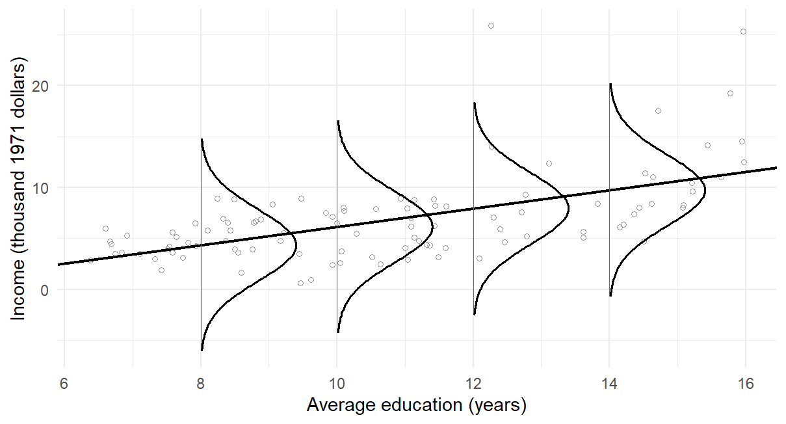
Figure 6 draws that model on the records, as panel (d) of Figure 1 drew it on invented points, with the fitted line and \(s_e=3.4834\) in place of the unknown \(\beta_0\), \(\beta_1\) and \(\sigma\). The records do not look like that everywhere. At higher education they spread more widely, and several incomes lie beyond the upper tails; at 8 years the curve reaches below zero, a sign that a Normal model for a nonnegative outcome is an approximation, which Section 4 meets again.
Substituting the process into the slope formula shows where slope uncertainty comes from. The observed predictor values stay fixed, as in Section 1.1, and \(\sum_i(x_i-\bar x)=0\), so
\[ \widehat\beta_1-\beta_1 =\frac{\sum_i(x_i-\bar x)\varepsilon_i}{S_{xx}}. \]
The fitted slope misses \(\beta_1\) because the realized errors need not cancel once weighted by distance from mean education. Independence and common variance give
\[ \operatorname{Var}(\widehat\beta_1) =\frac{\sigma^2\sum_i(x_i-\bar x)^2}{S_{xx}^2} =\frac{\sigma^2}{S_{xx}}, \]
which needs no Normality; Normality enters the exact \(t\) reference.
Estimating \(\sigma\) by \(s_e\) gives the standard error:
\[ SE(\widehat\beta_1)=\frac{s_e}{\sqrt{S_{xx}}} =\frac{3.4834}{\sqrt{751.8852}}=0.127. \]
The 95% confidence interval is
\[ \widehat\beta_1\ \pm\ t_{.975,n-2}SE(\widehat\beta_1) \approx0.8988\pm1.984(0.127) \approx[0.6468,\ 1.1508]. \]
Here 1.984 is the 97.5th percentile of \(t\) with 100 degrees of freedom, the residual df of Section 2.6: the \(t\) reference takes its df from the variance estimate, whose own uncertainty the heavier \(t\) tails allow for. More error variation raises the SE; more records and a wider predictor spread lower it, both by enlarging \(S_{xx}\). The education values x defined in Section 2.4 give the same SE:
sxx <- sum((x - mean(x))^2)
sigma(model) / sqrt(sxx)Repeating the known process of Section 1.3 shows what this SE estimates. Fix 40 predictor values over the same range, 6 to 16, and draw 2,000 samples from \(Y_i=2+0.5x_i+\varepsilon_i\) with \(\sigma=1\), fitting a line to each. The 2,000 fitted slopes have SD 0.0528, the average of their estimated SEs is 0.0531, and the formula \(\sigma/\sqrt{S_{xx}}\) gives 0.0534: the SE computed from one sample estimates how far slopes vary from sample to sample. Of the 2,000 intervals at the 95% level, .9455 contain the true slope 0.5, about as close to .95 as 2,000 repetitions can show. As for any confidence interval, coverage belongs to the interval procedure, not to one realized interval, which either contains the true slope or does not. In Figure 7, panel (a) shows the 2,000 slopes following the Normal curve whose SD, 0.0534, the SE formula gives, and panel (b) shows the first 100 realized intervals, of which 4 miss the true slope.

The test of \(H_0:\beta_1=0\) gives \(t=\widehat\beta_1/SE(\widehat\beta_1)\approx7.0753\) and a two-sided \(p<.0001\): evidence against the zero-slope model under the stated procedure. It is not the probability that the null is true, evidence of causation or a measure of practical importance. The interval describes what the procedure achieves over repetitions, as the known process showed, not a 95% probability for the fixed parameter. The coefficient table gives the estimate, SE and test, and confint() the interval, at its default level .95:
coef(summary(model))
#> Estimate Std. Error t value Pr(>|t|)
#> (Intercept) -2.8535855824 1.4070392470 -2.028078171 4.521163138e-02
#> education 0.8988128418 0.1270354112 7.075293679 2.079192410e-10
confint(model, "education")
#> 2.5 % 97.5 %
#> education 0.6467782042 1.150847479The slope test and the correlation test
The Pearson correlation \(r\) has its own test of a zero correlation, \(t=r\sqrt{(n-2)/(1-r^2)}\). For an OLS line with an intercept, fitted to the same complete pairs, the two tests coincide:
\[ \begin{aligned} t_{\mathrm{slope}} &=\frac{\widehat\beta_1}{s_e/\sqrt{S_{xx}}} =r\sqrt{\frac{n-2}{1-r^2}} =t_{\mathrm{Pearson}},\\ F_{\mathrm{regression}} &=t_{\mathrm{slope}}^2 =\frac{R^2}{1-R^2}(n-2). \end{aligned} \]
The first identity follows from the covariance form of the slope and \(RSS=(1-r^2)TSS\); the second compares the intercept-only model with the line, and squaring the signed \(t\) gives the nondirectional \(F\). For the occupation line both \(t\) statistics are 7.0753 on 100 df, and the \(F\) statistic that summary() prints is \(F(1,100)=50.0598=t^2\), all with \(p<.0001\). They are one comparison written three ways, not three pieces of evidence.
The \(F\) statistic is built from the sums of squares of Section 2.6 in the same way as the one-way analysis-of-variance \(F\) that compares group means: each sum of squares is divided by its degrees of freedom to give a mean square, and \(F\) is the ratio of the regression mean square to the residual mean square. Table 7 sets out the parts, which R’s anova() prints as the analysis-of-variance table of the regression.
| Source | SS | df | What the df count | MS | \(F\) |
|---|---|---|---|---|---|
| Regression | 607.4214 | 1 | Coefficients beyond the mean: one slope | 607.4214 | 50.0598 |
| Residual | 1213.3920 | 100 | Residuals free to vary after fitting two coefficients, \(n-2\) | 12.1339 | |
| Total | 1820.8134 | 101 | Deviations from the mean free to vary, \(n-1\) |
The degrees of freedom add as the sums of squares do, \(101=1+100\). The residual mean square is the squared residual SD, \(12.1339=3.4834^2\), and the regression mean square measures how far the fitted values spread around the mean per fitted slope. Their ratio, 50.0598, is compared with an \(F\) reference on 1 and 100 df, the two df of the table.
anova(model)| Df | Sum Sq | Mean Sq | F value | Pr(>F) | |
|---|---|---|---|---|---|
| education | 1 | 607.421386 | 607.42138602 | 50.05978064 | 2e-10 |
| Residuals | 100 | 1213.392025 | 12.13392025 | NA | NA |
The numerical identities use the same unweighted observations, a line with an intercept, and the ordinary least-squares standard error for the slope. For randomly sampled bivariate-Normal pairs a zero population correlation, \(\rho=0\), also means a zero conditional-mean slope, but the occupation records have no sampling warrant, so here the Pearson test only reproduces the process calculation.
A binary predictor and the two-sample t test
A predictor need not be continuous. In an invented feedback study, 24 students each received a score out of 20, twelve after massed and twelve after spaced practice. Code the schedule \(x_i=0\) for massed and \(x_i=1\) for spaced, and fit the same kind of line. With only two predictor values, the least-squares line joins the two group means (Figure 8).
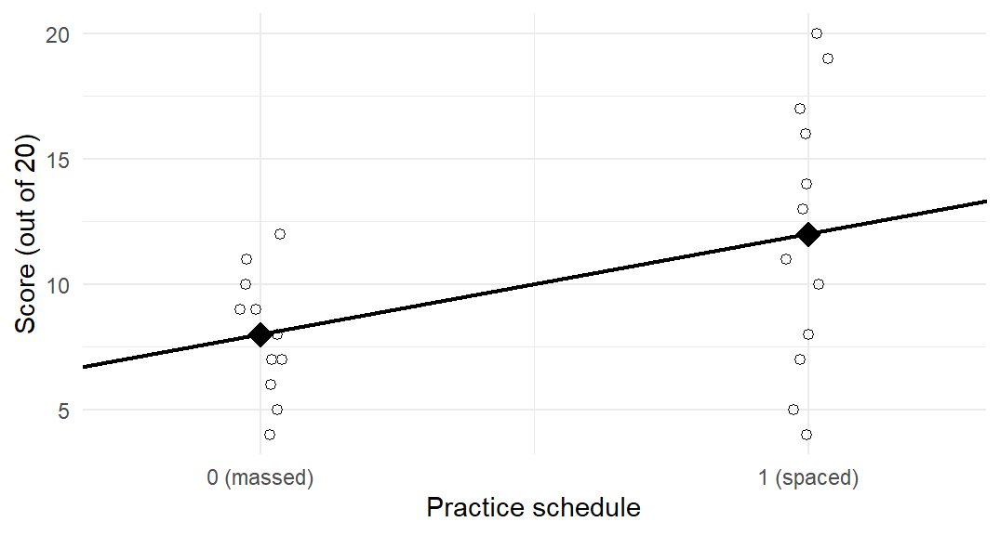
Its coefficients take the readings of panel (b) of Figure 1: the intercept is the mean at \(x=0\), the massed mean 8, and the slope the difference for a one-unit step in \(x\), from massed to spaced, \(\widehat\beta_1=12-8=4\). The slope’s SE is 1.6967, and its test gives \(t=2.3575\) on \(24-2=22\) df, \(p=.0277\). These are exactly the equal-variance (pooled) two-sample \(t\) test, written as a line, with \(F(1,22)=5.5579=t^2\). A factor with more than two levels needs more than one 0/1 column; Chapter 8, Section 4, develops that coding.
Prediction
One of the most useful applications of a fitted regression is to predict the outcome at chosen predictor values. At a fixed education value \(x_0\) the line gives one number, which answers three questions of increasing uncertainty: what the line predicts, what the mean income of occupations at \(x_0\) is, and what one new occupation’s income will be. The first is a point prediction; the second and third are the two targets it serves, a mean and a single new case, and both need Section 1’s model, declared for the occupations in Section 3.1.
Point prediction
The point prediction at \(x_0\) is the fitted line’s value,
\[ \widehat y_0=\widehat\beta_0+\widehat\beta_1x_0, \]
built from the estimates, not the unknown parameters. At \(x_0=12\) it is 7.9322 thousand dollars, the value predict() returned in Section 2.3. By itself a point prediction says nothing about its uncertainty, and the same number serves two different targets: it estimates the mean income of occupations at \(x_0\) and predicts one new occupation’s income.
The mean response and its confidence interval
Under the process model, occupations with education \(x_0\) have mean income \(\mu_0=\beta_0+\beta_1x_0\), the mean response, a process parameter. The point prediction estimates it, \(\widehat\mu_0=\widehat y_0\), with standard error
\[ SE(\widehat\mu_0) =s_e\sqrt{\frac1n+\frac{(x_0-\bar x)^2}{S_{xx}}} =3.4834\sqrt{\frac1{102}+ \frac{(12-10.738)^2}{751.8852}}=0.3803 \]
at 12 years. The 95% confidence interval for the mean response is \(7.9322\pm1.984(0.3803)\approx[7.1776,\ 8.6868]\). The SE is smallest at \(\bar x\) and grows with distance from it: it describes uncertainty about an average, not the spread of individual occupations. predict() returns the fit and the two limits:
predict(model, data.frame(education = 12), interval = "confidence")
#> fit lwr upr
#> 1 7.93216852 7.17757965 8.686757389A new case and its prediction interval
One new occupation at \(x_0\) has income \(Y_0=\mu_0+\varepsilon_0\), a random outcome with its own error. Predicting it by \(\widehat\mu_0\) makes an error with two parts,
\[ Y_0-\widehat\mu_0 =\varepsilon_0-(\widehat\mu_0-\mu_0), \]
the new case’s own error and the error in the estimated mean. When the new error is independent of the fitted data and comes from the same common-variance process, their variances add:
\[ \operatorname{Var}(Y_0-\widehat\mu_0) =\sigma^2+\operatorname{Var}(\widehat\mu_0). \]
Substituting the mean-response variance and estimating \(\sigma\) by \(s_e\) gives
\[ SE_{\mathrm{new}} =s_e\sqrt{1+\frac1n+\frac{(x_0-\bar x)^2}{S_{xx}}} =3.5041, \]
and the 95% prediction interval \(7.9322\pm1.984(3.5041)\approx[0.9802,\ 14.8842]\). The extra 1 is the new outcome’s own error variance, in units of \(\sigma^2\). More records locate the mean line more precisely, so the mean-response SE approaches zero as the sample grows; a new occupation still has its own deviation from that line, so \(SE_{\mathrm{new}}\) approaches \(\sigma\) instead.
predict(model, data.frame(education = 12), interval = "prediction")
#> fit lwr upr
#> 1 7.93216852 0.9801724429 14.8841646Confidence and prediction intervals compared
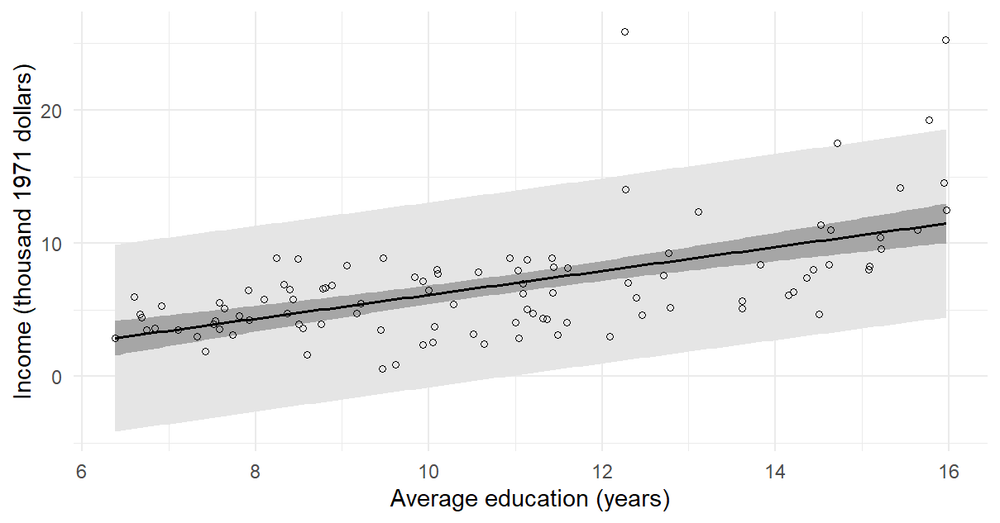
Figure 9 draws both intervals across the observed education range. The prediction band is much wider everywhere, because a prediction interval for one new occupation must account for two sources of uncertainty:
- the uncertainty in the estimated line, which the confidence interval for the mean response also captures;
- the new occupation’s own deviation from the line, whose SD is \(\sigma\).
Averaging removes the second source: the mean income of occupations at \(x_0\) does not depend on any one occupation’s deviation. Both bands widen away from \(\bar x\). Below about 11 years the prediction band’s lower limit falls below zero, which exposes the limits of a Normal model for a nonnegative outcome rather than forecasting negative income. Neither interval measures how well the line predicts records it has not seen; that held-out question belongs to Chapter 13. Appendix A derives the mean-response variance from the coefficient variances and their covariance, and gives both intervals at four education values.
Important
A warning on extrapolation. Predicting at predictor values outside the observed range is called extrapolation. The line describes the relationship only where records exist, here 6.38–15.97 years of education; beyond that range the relationship may change, and the records cannot check it. Software still returns a prediction and an interval there, but the data give them no support. The intercept is the extreme case: at zero years of education the line predicts an impossible income of \(-2.8536\) thousand dollars.
Checking the Fitted Line
Sections 3 and 4 use a straight-line mean and independent Normal errors with one SD at every education value. Judging independence requires knowing how the occupations and their measurements are related. The residuals help us examine the shape of the mean and the spread around it. Figure 10 plots each residual against its fitted value. Read the centre first. If a straight line describes the mean, the residuals scatter around zero with no pattern, and a smooth curve through them stays roughly flat. Here the curve sags, about 1.1 thousand dollars above zero at the lowest fitted incomes, about 1.6 below near a fitted income of 8, and back up to about 0.5 below zero at the top, so a constant education slope may miss a bend. Then read its spread: the vertical scatter widens from left to right. The residual SD is 1.59 thousand dollars in the third of the occupations with the lowest fitted incomes, 2.45 in the middle third and 5.15 in the top third, so one error SD for the whole range is doubtful.
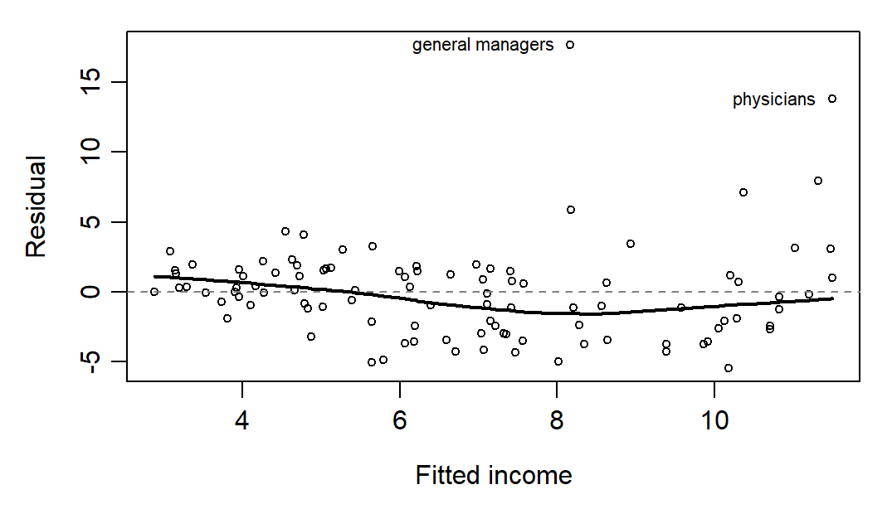
The widening spread matters most for the prediction interval of Section 4, which used one error SD, 3.4834, at every education value. The residual pattern suggests that the interval may be unnecessarily wide at low fitted incomes and too narrow at high fitted incomes. Checking its coverage would require outcomes for new occupations at comparable education values. To examine the bend in the centre of the plot, add education squared to the model. Its positive coefficient, 0.1342, gives a curve that steepens as education increases. The usual test gives \(p=.0059\) under the common-variance model. The widening spread and the fact that the plot prompted the check qualify the evidence for curvature.
most <- which.max(cooks.distance(model))
without <- lm(income_k ~ education, data = prestige[-most, ])
quad <- lm(income_k ~ education + I(education^2), data = prestige)
c(slope = unname(coef(model)[2]), without = unname(coef(without)[2]))
#> slope without
#> 0.8988128418 0.7982204353
coef(summary(quad))["I(education^2)", c("Estimate", "Pr(>|t|)")]
#> Estimate Pr(>|t|)
#> 0.134179313419 0.005856544055One occupation can also change the answer. General managers have the largest residual, 17.71 thousand dollars, yet omitting them moves the slope only from 0.8988 to 0.8625, because their education, 12.26 years, is only 1.5 years above the average. Omitting physicians moves it to 0.7982: physicians combine a large residual, 13.82, with nearly the highest education in the records, 15.96 years. A record’s leverage increases with its distance from mean education. Its influence depends on both its leverage and its residual. Cook’s distance summarizes how much the fitted values change when the record is omitted. Physicians have the largest Cook’s distance, 0.3983. Figure 11 shows the two lines: physicians, at the right end of the education range, lift that end of the full-data line and tilt it upward. Without physicians the education-squared coefficient also falls, to 0.0947 with \(p=.0406\), so the evidence for a bend leans partly on this one record.
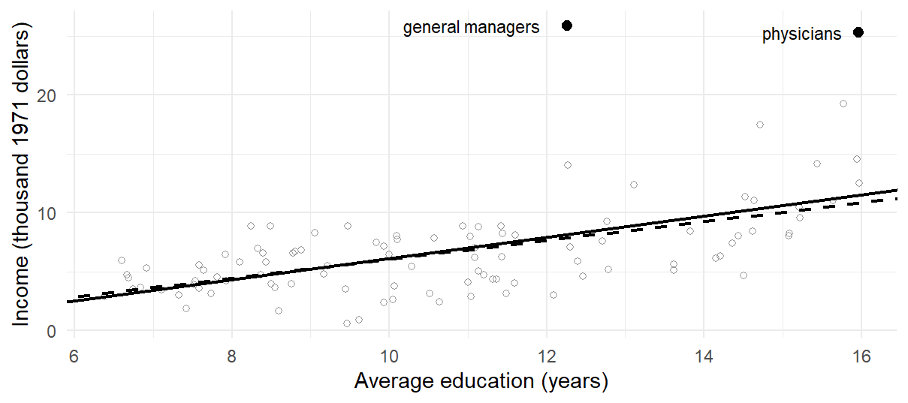
Nothing shows that physicians were recorded wrongly, so a report gives the slope with and without them rather than deleting them. Chapter 9 develops these checks for several predictors.
Regression to the Mean and Its Paradox
Regression to the mean describes predictions and group averages. When cases are selected for an extreme value on one measurement, their predicted or average value on a second, imperfectly related measurement, expressed on a comparable scale such as standard units, is likely to be less extreme, closer to its mean. It comes in two versions:
- When two different but related variables are measured and cases are extreme on the first, the predictor, they are likely to be less extreme, on average, on the second, the outcome.
- When one variable is measured twice and cases are extreme on the first measurement, they are likely to be less extreme, on average, on the second.
Both versions start with the same property of the fitted line. An extreme score on one measurement gives a less extreme linear prediction on the other, in standard units. This also works in reverse when we fit the first measurement on the second. To read either line as the average for cases at a given predictor value, the conditional mean in that direction must be adequately described by a line.
In simple regression, the amount of shrinkage depends on the correlation between the measurements. In standard units, \(z_x=(x-\bar x)/s_x\) and \(z_y=(y-\bar y)/s_y\), the slope of Section 2.4, \(\widehat\beta_1=r\,s_y/s_x\), turns the line into \(\widehat z_y=r\,z_x\); fitting the first measurement on the second, with slope \(r\,s_x/s_y\), gives \(\widehat z_x=r\,z_y\):
\[ \widehat z_y=r\,z_x,\qquad \widehat z_x=r\,z_y. \]
A case \(z_x\) SDs from the predictor’s mean is predicted only \(r\,z_x\) SDs from the outcome’s mean. Both lines have slope \(r\), smaller than 1 in absolute value unless the correlation is perfect.
With several predictors the same principle holds for the predicted outcome. A model predicts the mean outcome of cases that share their predictor values, so its predictions as a whole are less spread out than the observed outcomes, while each case’s outcome still varies around its prediction.
Version one: children’s heights regressing to the mean
The first version was discovered by Francis Galton, who gave regression its name (Galton, 1886). Predicting children’s adult heights from their parents’ heights, he noticed that the children of tall parents were taller than average but, on average, less tall than their parents, and that the children of short parents were shorter than average but less short than their parents. In the vocabulary of statistics, heights had “regressed” toward the mean from one generation to the next.
The GaltonFamilies data in the R package HistData hold the heights in inches of the parents and adult children of 205 families, from Beverley Shipley’s 2001 transcription of Galton’s notebook, hosted by James Hanley (Friendly et al., 2025; Hanley, 2004). We predict sons’ heights from their fathers’ heights. Install the package once with install.packages("HistData").
d0 <- HistData::GaltonFamilies
sons <- d0[d0$gender == "male", ]
galton <- data.frame(father = sons$father, son = sons$childHeight)
summary(galton)
#> father son
#> Min. :62.00000 Min. :60.0000
#> 1st Qu.:68.00000 1st Qu.:67.5000
#> Median :69.00000 Median :69.2000
#> Mean :69.13763 Mean :69.2341
#> 3rd Qu.:70.50000 3rd Qu.:71.0000
#> Max. :78.50000 Max. :79.0000
galton_fit <- lm(son ~ father, data = galton)
coef(summary(galton_fit))
#> Estimate Std. Error t value
#> (Intercept) 38.3625810324 3.30837360613 11.595601223
#> father 0.4465226047 0.04782546198 9.336503742
#> Pr(>|t|)
#> (Intercept) 1.425209005e-27
#> father 3.737108856e-19
sigma(galton_fit)
#> [1] 2.415990157d0 keeps the original records, sons the 481 rows for sons, and galton the two heights under short names. The 481 sons come from 179 families, so brothers share a father: the rows describe sons rather than separate families. That leaves the fitted line unchanged, but the model’s standard errors treat the 481 sons as independent and are therefore somewhat optimistic.
The intercept, 38.3626 inches, is the predicted height of a son whose father is zero inches tall. It places the line but has no substantive meaning, because no father in the data is anywhere near zero height: fathers range from 62 to 78.5 inches. The slope says that for two fathers who differ in height by one inch, the predicted heights of their sons differ by about 0.4465 inch. The residual SD, 2.416 inches, says how far sons typically lie from the line: under Normal errors about two-thirds of the sons are within 2.416 inches of the height predicted from their fathers’ heights. Figure 12 draws the records and the fitted line.
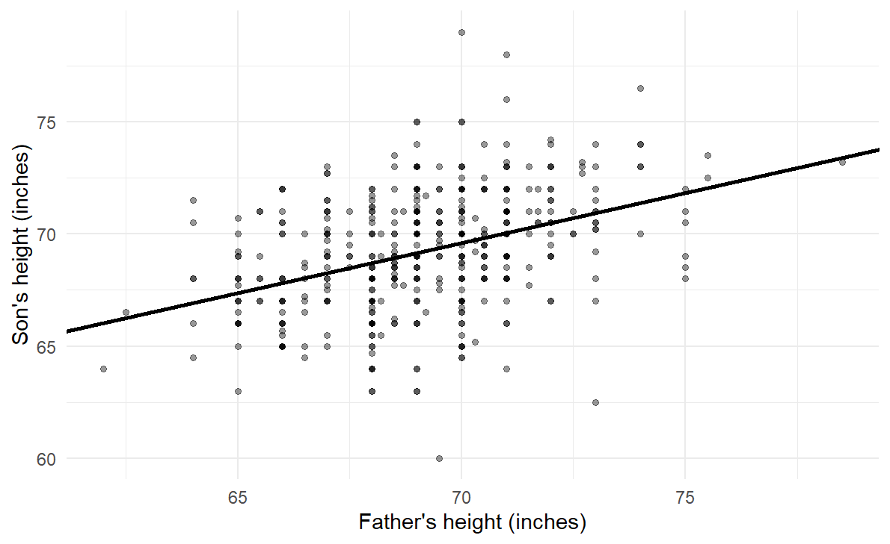
The fitted line is
\[ \widehat{\mathrm{son}}=38.3626+0.4465\times\mathrm{father}, \]
or, written around the fathers’ mean height of 69.1376 inches in the centred form of Section 2.5,
\[ \widehat{\mathrm{son}}=69.2341+0.4465\,(\mathrm{father}-69.1376). \]
In context, a father of average height is predicted to have a son of average height, 69.2341 inches, and for each inch that a father stands above or below the fathers’ mean, his son is predicted to stand about 0.45 inch above or below the sons’ mean. The same holds for groups. Among the 481 son records, 65 have a father more than 1 SD above the mean of the fathers’ column; they come from 27 families, so a father with several sons counts once for each son. Their fathers average 72.8754 inches, 1.621 SDs above that mean, and the 65 sons average 70.9631 inches, 0.6589 SDs above the sons’ mean, close to the line’s prediction in standard units, \(r(1.621)=.3924\times1.621=0.6361\). The reverse line \(\widehat z_x=r\,z_y\) also shows up in the records: the 83 sons more than 1 SD above the sons’ mean, 1.4302 SDs on average, have fathers only 0.6421 SD above the fathers’ mean, a little above the reverse line’s \(r(1.4302)=0.5612\); the 83 sons come from 56 families. Tall sons have less tall fathers, so regression runs backward in time as well, which no causal process between generations could produce.
This raises the paradox of regression to the mean. If tall fathers tend to have sons who are only tallish, and short fathers sons who are only shortish, are children more average than their parents? And if this continued, would each generation be more average than the last, until after a few generations nearly everyone was about the same height? Clearly this does not happen: many generations after Galton, heights are as variable as ever. In these families the sons’ heights are in fact more variable than the fathers’:
var(galton)
#> father son
#> father 5.316560204 2.373964310
#> son 2.373964310 6.884876733
var(fitted(galton_fit))
#> [1] 1.060028727
var(resid(galton_fit))
#> [1] 5.824848005The fathers’ heights have variance 5.3166 square inches and the sons’ 6.8849. The resolution of the paradox is that a son’s predicted height is not his actual height. The predictions are closer to the mean than the fathers’ heights are: the slope is below one, and the fitted values vary by only 1.06 square inches. The prediction is imperfect, though, and the part of each son’s height that his father’s height does not predict, the residual, adds variance 5.8248. The two parts add to the sons’ variance, \(1.06+5.8248=6.8849\) after rounding, and the predicted part’s share is \(R^2=r^2=.154\), Section 2.6’s decomposition divided by \(n-1\).
Regression is prediction with quantified uncertainty. The predictions move toward the mean, while the variation that the predictor does not explain moves outcomes away from their predictions; in a stable population the two balance, so that total variation stays roughly constant from one generation to the next (Gelman et al., 2020). Here sons of tall fathers have a less extreme predicted height, while sons across all the families still span a wide range of heights.
Version two: successive measurements regressing to the mean
Regression to the mean can be confusing, and it has led people to attribute causes where none act. To see how this can happen, consider students who take two tests, which is mathematically the same situation as fathers and sons. Figure 13 shows invented midterm and final exam scores for 1,000 students, generated under the true-score model of classical test theory that Part Two, Chapter 1, develops:
- Each student has a true score drawn from a Normal distribution with mean 50 and SD 10.
- The midterm score is the student’s true score plus a random component with mean 0 and SD 10. It reflects that performance on any one test is partly unpredictable, because a test is far from a perfect measuring instrument.
- Likewise, the final score is the same true score plus another, independent random component with mean 0 and SD 10.
In symbols, with \(T_i\) the true score of student \(i\),
\[ M_i=T_i+\varepsilon_{i1},\qquad F_i=T_i+\varepsilon_{i2},\qquad T_i\sim\mathcal N(50,\,10^2),\qquad \varepsilon_{i1},\,\varepsilon_{i2}\overset{\mathrm{ind}}\sim\mathcal N(0,\,10^2). \]
Half of each exam’s score variance comes from the true score, \(10^2/(10^2+10^2)=.5\), the exam’s reliability, the consistency of scores across repeated measurements. Only the true score repeats, so .5 is also the population correlation of the two exams and the slope of the population line, \(E(F\mid M)=50+.5\,(M-50)\).
set.seed(123)
n <- 1000
true_score <- rnorm(n, mean = 50, sd = 10)
error_1 <- rnorm(n, mean = 0, sd = 10)
error_2 <- rnorm(n, mean = 0, sd = 10)
midterm <- true_score + error_1
final <- true_score + error_2
exams <- data.frame(midterm, final)
exam_fit <- lm(final ~ midterm, data = exams)
coef(summary(exam_fit))
#> Estimate Std. Error t value Pr(>|t|)
#> (Intercept) 24.9127867912 1.32322445877 18.82733245 6.691489442e-68
#> midterm 0.4951449148 0.02511297731 19.71669502 2.435995828e-73
sigma(exam_fit)
#> [1] 11.70896866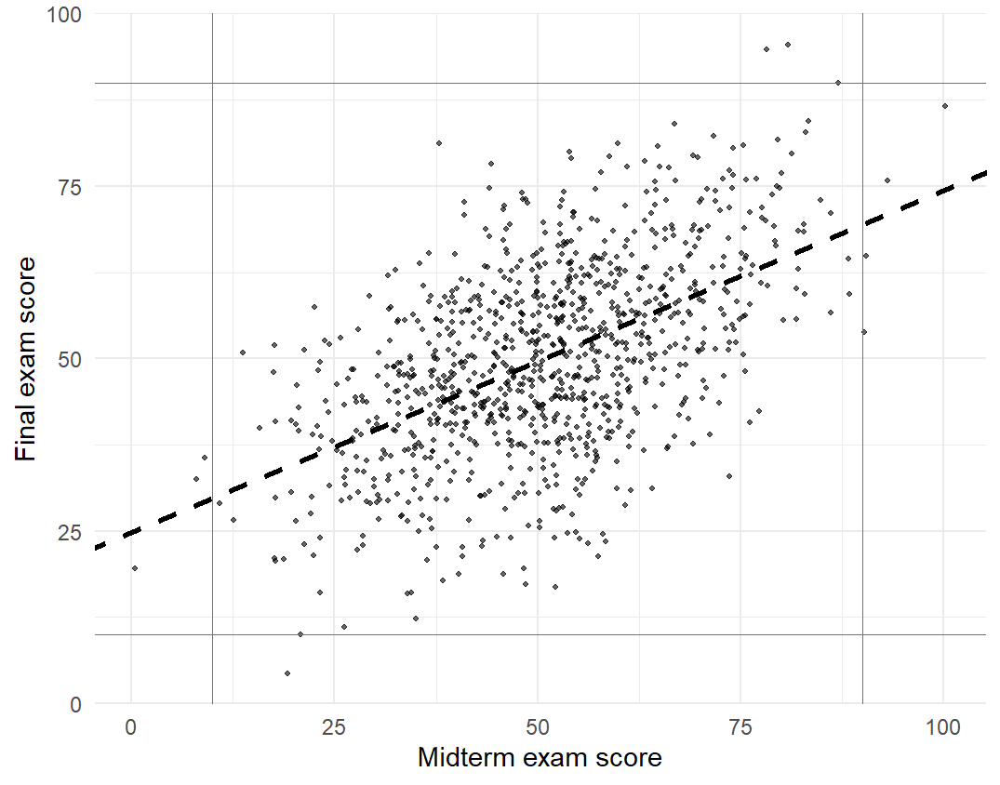
In centred form the fitted line is
\[ \widehat{\mathrm{final}}=49.9602+0.4951\,(\mathrm{midterm}-50.5859). \]
The estimated slope, 0.4951, lies below 1, which is regression to the mean: students who score high on the midterm tend to score only about half as far above the average on the final, and students who score low on the midterm still tend to score low on the final, but typically not as far below the average. At the far left of Figure 13, one student scored 0.4533 on the midterm but 19.5119 on the final; at the far right, one scored 100.2345 on the midterm but 86.6075 on the final. The 100 students in the top tenth on the midterm averaged 76.7247 points there and 64.5625 on the final, close to their mean true score of 63.7567; the bottom tenth rose from 24.7399 to 36.6971, near their mean true score of 37.1194.
It might seem natural to interpret this causally: students who score well on the midterm have high ability but then grow overconfident and ease off, so they do less well on the final, while poor scorers are motivated to try harder and improve. The data, however, came from a model with no causal effects at all. Both exams are a true score plus independent noise, and nothing happens between them; we know this because we wrote the rule that generated them.
The slope below 1 is a consequence of the variation between the first and second observations. A student who scores very well on the midterm is likely to have a high true score and also to have been somewhat lucky, with a large positive error. That luck is unlikely to repeat on the final, so the student is expected to do better than average but less well than on the midterm (Gelman et al., 2020). Reading the pattern causally would invent an effect: better-scoring students slacking off and weaker ones studying harder. Nor does the class become more uniform: the two exams’ SDs, 14.7516 and 13.7954, both estimate the same population SD, \(\sqrt{10^2+10^2}=14.1421\), because fresh luck on the final carries other students into the extremes.
Figure 14 puts both versions in standard units. In each panel the group means (diamonds) lie near the flatter line \(\widehat z_y=r\,z_x\), not the dotted line of slope 1. For the exams that slope is the sample correlation, .5295, a little above the raw slope 0.4951 because the final scores vary slightly less than the midterm scores.
![Two square panels with both axes from minus 3 to 3 standard units. Panel (a) shows sons' against fathers' heights and panel (b) final against midterm scores, each as a light grey cloud. In each, a dotted line of slope 1 runs corner to corner and a flatter solid line passes through the origin, with slope about 0.39 in (a) and 0.53 in (b). Filled diamonds for group means lie near the solid line: in (a) four diamonds from about minus 1.6 to 1.6 across and minus 0.65 to 0.66 up, in (b) ten diamonds from about minus 1.75 to 1.77 across and minus 0.96 to 1.06 up; the middle diamonds sit near zero.](chapter_07_files/figure-html/fig-ch7-rtm-z-1.png)
Further reflection: the flight school example
The paradox of regression to the mean is not uncommon. A well-known illustration comes from flight training (Kahneman & Tversky, 1973; Tversky & Kahneman, 1974). Instructors at a flight school followed psychologists’ advice to reinforce success: they praised each well-executed manoeuvre. With experience, they concluded that the advice was wrong. After high praise for a smooth execution the next attempt was usually worse, while after criticism of a poor one the next attempt was usually better.
The instructors had discovered regression to the mean but credited it to the effect of praise. Kahneman and Tversky drew a sobering general lesson (Kahneman & Tversky, 1973). People usually reward others when their performance is good and punish them when it is poor. Regression alone then makes performance tend to improve after punishment and decline after reward, so those who give feedback are repeatedly taught, misleadingly, that punishment works and reward does not. The instructors could come to believe firmly that praise is ineffective or even harmful, and that criticism is a highly effective tool.
The key point of the example is that a quantitative understanding of prediction clears up a qualitative confusion about variation and causality. When performance has a substantial random component, an extremely good result is likely to be followed by a less exceptional one and an extremely poor result by an improvement, even when no causal mechanism connects the two events. From statistical considerations alone, the best trainees are expected to decline somewhat relative to the others on their next attempt and the worst to improve, just as the sons of very tall fathers tend to be shorter than their fathers and the sons of very short fathers taller. The same pattern appears in the performance of athletes and teams from one game or season to the next, in the economic results of regions across successive quarters or years, and in repeated scores on educational tests (Gelman et al., 2020).
The regression fallacy arises when such patterns are compared, often without saying so, with a model of perfect prediction in which the second measurement would equal the first. When both measurements are on the same scale, that hidden benchmark is a line of slope 1: midterm and final scores identical, a son exactly as tall as his father, a next landing as good as the last. The comparison is inappropriate because real measurements always contain random variation, and the movement away from the slope-1 line is then mistakenly credited to a cause. The dotted line in Figure 14 is that benchmark in standard units, the line on which the second measurement is exactly as many SDs from its mean as the first: the group means follow the flatter regression line, not the line the fallacy expects.
The point is not that a simple regression licenses causal conclusions in such settings. Rather, regression to the mean, compared with an implicit and unrealistic model of perfect prediction, easily leads to wrong causal conclusions, such as that students who did poorly on the midterm were motivated to study harder for the final while those who did well relaxed. Judging an actual intervention requires a design that supplies the expected outcome without the intervention, such as random assignment of help among similarly selected cases or credible untreated comparison data (Barnett et al., 2005); the two measurements alone cannot. Exercise 5 works through one such benchmark, and Chapter 14, Section 4.1, applies the reasoning to selection on a noisy baseline.
Reading Bridge
A simple regression starts from a model: the mean of an outcome is a straight line in one predictor, with an intercept, a slope and an error SD, and a process whose values we set shows estimates landing near them, usually within about one SE. Applied to records, the line starts with a unit and a comparison. Its fitted values are the line’s predictions for the records and its residuals the records’ distances from them; least squares puts the line through the mean point, with the slope set by covariance and predictor variation. Across the 102 recorded occupations, fitted income rises by 0.8988 thousand 1971 Canadian dollars, about 899 dollars, per year of occupation-average education over the observed 6.38–15.97 years: a bounded description of the records, not an individual, causal or population return. Declaring the model for the occupations gives the slope a standard error and an interval, whose coverage repeated samples make visible. The residual SD, \(R^2\), the slope’s standard error, and the mean-response and new-case intervals answer different questions. The residual SD and the \(t\) and \(F\) references count the residual degrees of freedom, \(n-2\), left after fitting two coefficients. The bend in the residual plot questions a constant slope, and the widening spread questions one error SD and the prediction interval built on it. Omitting one influential occupation moves the slope from 0.8988 to 0.7982. That is the chapter’s through-line: the line predicts, and, once a model is declared, standard errors and intervals say how uncertain its slope and predictions are. In standard units the line predicts \(r\) times a case’s distance from the mean, whether the two measurements are a father’s and a son’s heights or one student’s two exam scores. Groups selected for extreme values are predicted nearer the mean under the stated linear relation, while outcomes retain residual variation. Reading a before-and-after gain as an effect needs a credible no-intervention comparison and an appropriate causal design. Argument Chapter A reads a short report of the occupation line as an argument.
Chapter 8 writes the model with several predictors and reads a partial slope, first on a simulated process with two predictors. On the occupations it refits the education-only line on the 98 occupations with a recorded type, so that the change from 102 to 98 records is not mistaken for an effect of adjustment; it then adds prestige and the percentage of women, compares models, and brings occupation type in as a categorical predictor. Chapter 9 develops the checks of the assumptions fully for Chapter 8’s model, examines overlapping predictors and their contributions, transforms variables, and recomputes uncertainty with robust and resampled methods; its Section 7 (Project STAR) reads a randomized class-size experiment whose uncertainty follows its school-clustered design (Finn & Achilles, 1990; Mosteller, 1995). Chapter 10 extends the factorial interactions of Chapters 4 and 6 to regression predictors.
Key terms
Use this short reference to revisit the regression concepts introduced here. The Part One Concept Reference gives the broader reference and the principal home of each concept; fitted values, residuals, standard errors, intervals, standardized values, and the reading vocabulary are explained in Chapters 1–4.
| Term and common alternatives | Meaning |
|---|---|
| Simple linear regression (simple regression model; regression line) | A model in which an outcome’s mean is a straight line in one predictor, \(E(Y\mid x)=\beta_0+\beta_1x\), with errors around the line that average zero and share one SD \(\sigma\); its three parameters are the intercept, the slope and \(\sigma\). The least-squares line estimates the model’s line: its descriptive use concerns the records fitted, and a model-based use needs a declared process. |
| Intercept | The fitted outcome at predictor value zero. It places the line vertically; when zero is outside the observed support, it is a mathematical anchor rather than a supported prediction. Centering the predictor moves it to a supported reference point. |
| Slope (regression coefficient) | The difference in fitted outcome per one-unit difference in the predictor, in outcome units per predictor unit. It compares units that differ in the predictor; it is not a change within one unit unless a design supports that reading. |
| Comparison and counterfactual interpretations (predictive and causal readings) | A comparison reading treats a coefficient as the predicted difference in outcome between units that differ by one unit in the predictor; it is the default for observational records. A counterfactual reading treats it as a causal contrast between outcomes under two predictor values. No unit is observed under both, so a credible comparison, such as a randomized one, can identify the average contrast across units even when individual contrasts differ, but not one unit’s own. |
| Ordinary least squares (OLS) | The rule that chooses the intercept and slope minimizing the residual sum of squares. With an intercept, the fitted line passes through the mean point and the residuals sum to zero; the slope equals covariance divided by predictor variance. |
| Residual sum of squares (RSS) | The sum of squared residuals from a fitted line, in squared outcome units. Total squared variation about the mean splits into a regression part and RSS when the model has an intercept. |
| Residual standard deviation (residual standard error; standard error of the estimate) | The square root of RSS divided by its residual degrees of freedom, in outcome units; with an intercept and one predictor the degrees of freedom are \(n-2\). Under the process model it estimates the error SD. |
| R-squared (coefficient of determination) | One minus RSS divided by total squared variation: the proportion of centered squared outcome variation accounted for by the fit in these records. In simple regression with an intercept it equals the squared correlation; for any least-squares fit with an intercept it equals the squared correlation between the outcome and its fitted values. |
| Confidence interval for a mean response (mean-response interval) | An interval for the process mean outcome at a stated predictor value, using the SE of the fitted value. It concerns an average, narrows near the predictor mean, and does not cover individual outcomes. |
| Prediction interval (new-case interval) | An interval for one new outcome at a stated predictor value from the same process. Its variance adds the error variance to the fitted-mean variance, so it is wider than the mean-response interval and keeps a nonzero floor as the sample grows. |
| Residual plot (residuals against fitted values) | A plot of each residual against its fitted value, read for its centre, where a curve questions the straight-line mean, and its spread, where widening scatter questions one error SD and the prediction interval built on it. |
| Extrapolation (predictor support) | Using a fitted line at predictor values outside the observed range or where observations are sparse. Software returns a number there; the data do not support it. |
| Regression toward the mean (regression to the mean) | For a simple linear prediction in standard units, \(\widehat z_y=r\,z_x\); when \(\lvert r\rvert<1\), the predicted value is nearer its mean than the predictor is to its mean. In a stable repeated-measurement model with independent occasion errors, a group selected on an extreme noisy first score is expected to be less extreme on the second. These are statements about predictions or conditional averages, not every case; a narrower spread of predictions does not imply a narrower outcome distribution (the regression paradox). |
| Regression fallacy | Attributing to an intervention the movement expected from selection on an extreme noisy measurement. Evaluating an intervention requires a credible no-intervention benchmark, supplied by a suitable design or untreated comparison under stated assumptions; a fitted line through treated outcomes alone does not supply it. |
Further reading
For another accessible account of lines, residuals, and fit, see OpenIntro’s single-predictor regression tutorial. For a compact executable route from a fitted model to intervals and checks, see the ISLR authors’ Chapter 3 R lab (James et al., 2021). Consult the carData reference manual (Fox et al., 2022) for data documentation, Barnett et al. (2005) on regression to the mean in repeated measurements, and Fox (2016), Fox & Weisberg (2019), and Gelman et al. (2020) for broader regression treatments.
Exercises
The prompts below use Foundational and Integrative levels. Where rounded summaries are supplied, answers within 0.02 in the stated units are sufficient. Exercises 1–6 draw on the main chapter.
Exercise 1: Read the unit and the line (Foundational)
A teaching report describes 80 occupations with \(\widehat{\mathrm{income}}=-1.5+0.7\,\mathrm{education}\), where income is in thousand dollars and average education ranges from 7 to 16 years. Interpret the slope and the intercept. Calculate the fitted income at 12 years and the residual for an occupation at 12 years with income 9. Explain why the slope does not give an individual’s gain from another year of schooling.
Exercise 2: Connect covariance and the fitted line (Foundational)
A set of records has \(\bar x=4,\bar y=10,S_{xx}=20,S_{xy}=30\). Calculate the OLS slope and intercept, and the fitted value at \(x=5\). Show that the line passes through the mean point. If \(s_x=2\) and \(s_y=5\), calculate the correlation implied by these summaries. What would prevent fitting a slope if every \(x\) were equal?
Exercise 3: Separate fit and uncertainty (Foundational)
An intercept-and-slope regression has \(n=22\), \(RSS=80\), \(TSS=144\), \(S_{xx}=100\), and fitted slope 0.8. Calculate residual SD, \(R^2\), and the classical slope SE. Use \(t_{.975,20}=2.086\) to obtain a 95% slope interval. State the process assumptions needed for that interval and explain why it does not by itself establish that the line fits closely or identifies a cause.
Exercise 4: Mean or new case? (Foundational)
Under the stated independent Normal-error constant-variance model, a fitted value at \(x_0=\bar x\) is 12, \(n=25\), and \(s_e=3\). Before calculating, consider a larger study with 100 independent records, the same predictor mean and the same residual SD. Predict whether the mean-response SE and the new-case prediction SE would both halve at \(x_0=\bar x\), and explain your prediction. Then, for the original 25-record study, use \(t_{.975,23}=2.069\) to calculate the SE and 95% interval for the conditional mean and the prediction SE and interval for one independent new case at the same \(x_0\). Explain the extra 1 in the prediction expression. Would either interval validate the model in a different population?
Exercise 5: Tell regression toward the mean from an effect (Integrative)
In an invented study, a school records a reading test in September and again in June for all 200 of its pupils. Both tests have mean 50 and SD 10, and their correlation is .6. The 20 pupils with the lowest September scores, averaging 32 points, receive extra tutoring, and their June mean is 42.8 points. These figures include the tutored pupils’ June scores, so by themselves they cannot show what those scores would have been without tutoring. The school’s records from earlier years, when no pupil was tutored, supply that benchmark: the two tests again had means 50, SDs 10 and correlation .6, and the mean June score of pupils with the same September score followed a straight line in that score. Assume that this year’s pupils would have followed the same pattern without tutoring. (1) Express the tutored group’s September mean in standard units, and give the June mean that this pattern’s line in standard units predicts for pupils with that September score, in standard units and in points. (2) The school reports that tutoring raised the group by 10.8 points. Name the error in reading the whole gain as an effect of tutoring, and say how much of the gain regression toward the mean predicts by itself under this pattern. (3) The report adds that, since the lowest scorers caught up, the June scores of all 200 pupils must be less spread out than September’s. Split a June score into the part that the September score predicts and the part it does not, give the SD of each part, and explain why regression toward the mean leaves the June SD at 10. (4) Describe a comparison that would separate an effect of tutoring from regression toward the mean.
Exercise 6: Respond to sensitivity (Integrative)
Across the 102 occupations, the education slope is 0.90 thousand dollars per year. Omitting physicians, a valid high-income occupation, gives 0.80. The residual plot also shows a bend in its centre and a widening spread at higher fitted incomes.
What does the omission tell you about the slope? How does adding education squared change the interpretation of a one-year difference? What does the widening spread suggest about the prediction interval for a new occupation? Write a short sensitivity disclosure explaining why you retain physicians in the analysis.
Appendix A: Extended regression mathematics and interval derivations
This appendix derives the identities the main text uses, keeping identities about the observed records apart from claims about hypothetical repetitions. Occupation calculations use the same 102 rows, education in years and income in thousand 1971 Canadian dollars.
Derivatives, normal equations, and the minimizing line
Start with a fitted model that predicts one common center \(m\) for every observation. The mean minimizes the sum of squared deviations, because of the identity
\[ L(m)=\sum_i(y_i-m)^2 =\sum_i(y_i-\bar y)^2+n(m-\bar y)^2. \]
Write \(y_i-m=(y_i-\bar y)+(\bar y-m)\) and expand the square. The cross term is zero because \(\sum_i(y_i-\bar y)=0\). For \(n>0\), the last term is nonnegative and vanishes only at \(m=\bar y\), so the mean uniquely minimizes this criterion.
The three outcomes \(2,4,3\) from Section 2.4 have mean 3 and \(L(m)=2+3(m-3)^2\), so their best constant line has loss 2. Letting the fitted value depend on the three predictor values reduces RSS to 1.5, as Table 4 showed; neither result requires Normal errors or a probability sample. A numerical search could locate the least-squares line; here we develop it algebraically.
The intercept-and-slope criterion has two coefficients to determine, so we set its two partial derivatives to zero and then verify that the resulting line is the minimum. For candidate intercept \(b_0\) and slope \(b_1\), define
\[ Q(b_0,b_1)=\sum_{i=1}^n(y_i-b_0-b_1x_i)^2. \]
Differentiating with respect to each candidate coefficient gives
\[ \frac{\partial Q}{\partial b_0} =-2\sum_i(y_i-b_0-b_1x_i),\qquad \frac{\partial Q}{\partial b_1} =-2\sum_i x_i(y_i-b_0-b_1x_i). \]
At the minimum both derivatives are zero. The resulting normal equations are
\[ n\widehat\beta_0+\widehat\beta_1\sum_i x_i=\sum_i y_i, \qquad \widehat\beta_0\sum_i x_i+\widehat\beta_1\sum_i x_i^2 =\sum_i x_iy_i. \]
The first equation gives \(\widehat\beta_0=\bar y-\widehat\beta_1\bar x\). Substitution into the second yields
\[ \widehat\beta_1 =\frac{\sum_i x_iy_i-n\bar x\bar y} {\sum_i x_i^2-n\bar x^2} =\frac{S_{xy}}{S_{xx}}. \]
Here \(S_{xx}=\sum_i(x_i-\bar x)^2>0\) is required: a slope cannot be identified when every predictor value is the same. Because sample covariance and variance use the same denominator \(n-1\),
\[ \widehat\beta_1 =\frac{s_{xy}}{s_x^2} =r\frac{s_y}{s_x}, \qquad \widehat\beta_0=\bar y-\widehat\beta_1\bar x. \]
In the occupation data,
\[ \widehat\beta_1 =\frac{675.8041}{751.8852}\approx0.8988, \qquad \widehat\beta_0=\bar y-\widehat\beta_1\bar x\approx-2.8536. \]
Unlike a correlation, the slope changes when a variable’s units change. Standardizing both variables makes their SDs one, so the slope becomes \(r\); Section 6 reads that line.
To verify that the stationary point is the unique minimum, write any other line as \(\widehat\beta_0+d_0+(\widehat\beta_1+d_1)x_i\). The normal equations make the cross term with the OLS residuals vanish, leaving
\[ Q(\widehat\beta_0+d_0,\widehat\beta_1+d_1) =RSS+n(d_0+d_1\bar x)^2+d_1^2S_{xx}. \]
With \(S_{xx}>0\), every different line has larger RSS. If a candidate line is constrained to pass through \((\bar x,\bar y)\), its excess RSS is simply \(S_{xx}(b_1-\widehat\beta_1)^2\). Section 2.5 makes this comparison visible with five candidate lines.
Residual constraints and the decomposition of variation
At the OLS solution the derivative equations become \(\sum_i e_i=0\) and \(\sum_i x_ie_i=0\). Thus the residuals have zero sample covariance with the predictor and mean zero by construction. They are not evidence that the unknown population errors are independent, normally distributed, or conditionally mean zero.
The fitted line passes through \((\bar x,\bar y)\), so \(\widehat y_i-\bar y=\widehat\beta_1(x_i-\bar x)\). Its centred fitted values therefore have zero cross-product with the residuals:
\[ \sum_i(\widehat y_i-\bar y)e_i =\widehat\beta_1\left(\sum_i x_i e_i-\bar x\sum_i e_i\right)=0. \]
Writing each observed deviation as its fitted part plus its residual, then expanding the square, gives
\[ \begin{aligned} \sum_i(y_i-\bar y)^2 &=\sum_i\{(\widehat y_i-\bar y)+e_i\}^2\\ &=\sum_i(\widehat y_i-\bar y)^2+\sum_i e_i^2, \end{aligned} \]
since \(\sum_i(\widehat y_i-\bar y)e_i=0\). This proves \(TSS=RegSS+RSS\), an algebraic decomposition of observed variation, not a division into causal contributions. For these records, \(1820.8134=607.4214+1213.3920\), in squared thousand-dollar units.
Also \(RegSS=\widehat\beta_1^2S_{xx}=S_{xy}^2/S_{xx}\). Dividing by \(TSS=S_{yy}\) proves \(R^2=S_{xy}^2/(S_{xx}S_{yy})=r^2\) for simple regression with an intercept. The identities need not hold for a no-intercept fit. When fitted values are nonconstant, \(\operatorname{cor}(y,\widehat y)^2=R^2\) as well.
The two fitted coefficients impose the two residual constraints. Under a correct linear mean with independent errors of common variance, the same least-squares identity applied to the errors gives
\[ RSS=\sum_i\varepsilon_i^2-n\bar\varepsilon^2 -\frac{\{\sum_i(x_i-\bar x)\varepsilon_i\}^2}{S_{xx}}. \]
The expectations of the three terms are \(n\sigma^2\), \(\sigma^2\) and \(\sigma^2\). Thus \(E(RSS)=(n-2)\sigma^2\), and \(s_e^2=RSS/(n-2)\) is an unbiased estimate of the error variance. Its square root \(s_e\) estimates the error SD in the outcome’s units but is not itself exactly unbiased for \(\sigma\).
From an error model to slope and intercept uncertainty
The 102-record least-squares line is already determined by those records. The next derivations concern a separate model-based question: the coefficients of a process that could generate new, independent occupation outcomes at the observed education values. They assume the model of Section 1.1 at fixed observed \(x_1,\ldots,x_n\), with \(E(\varepsilon_i)=0\), \(\operatorname{Var}(\varepsilon_i)=\sigma^2\) and \(\operatorname{Cov}(\varepsilon_i,\varepsilon_j)=0\) for \(i\ne j\). These are working conditions, not consequences of fitting lm(). Section 3.1 derives the slope’s variance, \(\sigma^2/S_{xx}\), and its SE, \(s_e/\sqrt{S_{xx}}\). Because \(\widehat\beta_0=\bar Y-\widehat\beta_1\bar x\) and \(\operatorname{Cov}(\bar Y,\widehat\beta_1)=0\),
\[ \operatorname{Var}(\widehat\beta_0) =\sigma^2\left(\frac1n+\frac{\bar x^2}{S_{xx}}\right), \qquad \operatorname{Cov}(\widehat\beta_0,\widehat\beta_1) =-\frac{\bar x\sigma^2}{S_{xx}}. \]
Here \(S_{xx}=\sum_i(x_i-\bar x)^2\), as in Section 2.4. The covariance is why simply adding the variances of an uncentered intercept and slope would be wrong; with the predictor centered at its mean the two estimates are uncorrelated, and the intercept SE is \(s_e/\sqrt n\).
Under the stated linear-mean, uncorrelated, equal-variance conditions, OLS is the best linear unbiased estimator: it has the smallest variance among estimators linear in the outcomes and unbiased for the coefficients. This Gauss–Markov statement does not require normal errors and does not establish causal identification, valid measurement, or population coverage (Fox, 2016; Kutner et al., 2005).
If the independent errors are also Normal, then the standardized coefficient error is normal, \(RSS/\sigma^2\) has a \(\chi^2_{n-2}\) distribution, and these quantities are independent. Their ratio gives
\[ \frac{\widehat\beta_j-\beta_j}{SE(\widehat\beta_j)} \sim t_{n-2},\qquad j=0,1. \]
That is the basis of exact classical coverage for \(\widehat\beta_j\pm t_{.975,n-2}SE(\widehat\beta_j)\) and of the corresponding null test, which Section 3.1 applies to the occupation slope; the diagnostics of Section 5 do not support treating that interval’s nominal coverage as established.
These derivations condition on the predictor values, which need not have been fixed by an experiment; a model with random predictors uses the same conditional argument when its error conditions hold. Neither route shows that the occupations were probability sampled, and neither requires education or income to be Normal.
Why a new-case interval has an additional variance term
For a supported value \(x_0\), define the model mean \(\mu_0=\beta_0+\beta_1x_0\) and its estimate \(\widehat\mu_0=\widehat\beta_0+\widehat\beta_1x_0\). Substituting the coefficient variances and covariance above gives
\[ \begin{aligned} \operatorname{Var}(\widehat\mu_0) &=\operatorname{Var}(\widehat\beta_0) +x_0^2\operatorname{Var}(\widehat\beta_1) +2x_0\operatorname{Cov}(\widehat\beta_0,\widehat\beta_1)\\ &=\sigma^2\left\{\frac1n+\frac{(x_0-\bar x)^2}{S_{xx}}\right\}. \end{aligned} \]
All predictor values, including the chosen \(x_0\), remain fixed. A confidence interval for this mean uses the square root with \(s_e\) for \(\sigma\). A new occupation outcome is instead \(Y_0=\mu_0+\varepsilon_0\); if its error is independent of the fitted data and comes from the same Normal, equal-variance process,
\[ \operatorname{Var}(Y_0-\widehat\mu_0) =\sigma^2\left\{1+\frac1n+\frac{(x_0-\bar x)^2}{S_{xx}}\right\}. \]
The extra \(1\) is new outcome variation, which would remain even if the model mean were known. Both intervals use the same \(t_{.975,n-2}\) multiplier. The table applies both formulas at four supported education values, the same calculation as Section 4’s two predict() calls.
| Education | Fitted | Mean lower | Mean upper | Case lower | Case upper |
|---|---|---|---|---|---|
| 8 | 4.3369 | 3.3651 | 5.3087 | \(-2.6420\) | 11.3158 |
| 10 | 6.1345 | 5.4254 | 6.8437 | \(-0.8127\) | 13.0818 |
| 12 | 7.9322 | 7.1776 | 8.6868 | 0.9802 | 14.8842 |
| 15 | 10.6286 | 9.3550 | 11.9022 | 3.6013 | 17.6559 |
At 10 years the point prediction is 6.1345 thousand dollars, the mean interval [5.4254, 6.8437] and the new-occupation interval [\(-0.8127\), 13.0818]. For an income known to be nonnegative, replacing the lower endpoint by zero includes exactly the same possible incomes. Its coverage therefore stays the same. Whether that coverage is close to 95% depends on how well the model describes new occupations at 10 years of education. A model that builds in the income boundary would have its own prediction interval and checks.
None of these formulas includes uncertainty from a wrong mean function, biased measurement or a shift to another labour market. They are pointwise model intervals, not a simultaneous band or an out-of-sample validation, and their target is a new occupation-level record from the declared process, never an individual worker’s income.
References
Barnett, A. G., van der Pols, J. C., & Dobson, A. J. (2005). Regression to the mean: What it is and how to deal with it. International Journal of Epidemiology, 34(1), 215–220. https://doi.org/10.1093/ije/dyh299
Finn, J. D., & Achilles, C. M. (1990). Answers and questions about class size: A statewide experiment. American Educational Research Journal, 27(3), 557–577.
Fox, J. (2016). Applied regression analysis and generalized linear models (3rd ed.). SAGE Publications.
Fox, J., & Weisberg, S. (2019). An R companion to applied regression (3rd ed.). SAGE Publications. https://www.john-fox.ca/Companion/index.html
Fox, J., Weisberg, S., & Price, B. (2022). carData: Companion to applied regression data sets (Versions 3.0-5). Comprehensive R Archive Network. https://doi.org/10.32614/CRAN.package.carData
Friendly, M., Dray, S., Li, P., & Bellhouse, D. (2025). HistData: Data sets from the history of statistics and data visualization (Version 1.0.0). Comprehensive R Archive Network. https://doi.org/10.32614/CRAN.package.HistData
Galton, F. (1886). Regression towards mediocrity in hereditary stature. The Journal of the Anthropological Institute of Great Britain and Ireland, 15, 246–263. https://doi.org/10.2307/2841583
Gelman, A., Hill, J., & Vehtari, A. (2020). Regression and other stories. Cambridge University Press. https://doi.org/10.1017/9781139161879
Hanley, J. A. (2004). “Transmuting” women into men: Galton’s family data on human stature. The American Statistician, 58(3), 237–243. https://doi.org/10.1198/000313004X1558
James, G., Witten, D., Hastie, T., & Tibshirani, R. (2021). An introduction to statistical learning: With applications in R (2nd ed.). Springer. https://doi.org/10.1007/978-1-0716-1418-1
Kahneman, D., & Tversky, A. (1973). On the psychology of prediction. Psychological Review, 80(4), 237–251. https://doi.org/10.1037/h0034747
Kutner, M. H., Nachtsheim, C. J., Neter, J., & Li, W. (2005). Applied linear statistical models (5th ed.). McGraw-Hill/Irwin.
Mosteller, F. (1995). The Tennessee study of class size in the early school grades. The Future of Children, 5(2), 113–127.
Robinson, W. S. (1950). Ecological correlations and the behavior of individuals. American Sociological Review, 15(3), 351–357. https://doi.org/10.2307/2087176
Tversky, A., & Kahneman, D. (1974). Judgment under uncertainty: Heuristics and biases. Science, 185(4157), 1124–1131. https://doi.org/10.1126/science.185.4157.1124